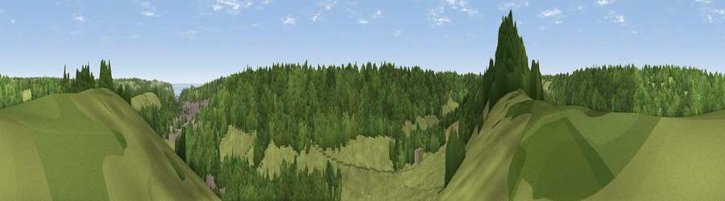

Viewpoint near River
#31641 in England · top 49% of its area beats it · near River · open accessWhere it is
The exact computed spot (TR 29075 41325). Click the marker for map links.
Public access: this spot lies on mapped open-access land (CRoW Act 2000) — you may roam here on foot. Computed from Natural England's CRoW access layer and OpenStreetMap rights of way — not the legal definitive map. Always verify locally.
The view, rendered

A 360° render of this exact spot computed from the terrain model, tree cover and land cover — summer colours, afternoon light, calibrated against photographs of famous viewpoints. Real trees, hedges and buildings will differ in detail.
The panorama
Grey silhouette: terrain skyline in each direction (720 bearings, Earth curvature and refraction included). Dashed green: skyline with trees (+15 m) and buildings (+8 m) as obstacles. Blue strip: how far the ground is visible on each bearing.
Where the view opens
Wedge length = distance to the farthest visible ground on that bearing (vegetation-aware). Rings at 10, 25 and 50 km.
What fills the view
51% woodland · 31% grassland · 14% cropland · 4% built-up
Angular shares of the visible panorama (visual magnitude), not map area. Landscape diversity 0.49 (0–1 Shannon).
Key numbers
More beautiful places nearby
The staircase of upgrades: each row has a higher view potential than everything closer. Driving times are estimates from straight-line distance, calibrated against real road routing — check an actual route before setting out.
| Place | Direction | Drive | Score |
|---|---|---|---|
| Viewpoint near River | NNW · 1 km | ~2 min | 42.4 |
| Viewpoint near Dover | ESE · 2 km | ~5 min | 76.4 |
| Viewpoint near Capel-le-Ferne | SSW · 2 km | ~6 min | 77.1 |
| Viewpoint near Capel-le-Ferne | SSW · 3 km | ~7 min | 77.9 |
| Viewpoint near Capel-le-Ferne | WSW · 6 km | ~13 min | 80.2 |
| Viewpoint near Willingdon | WSW · 81 km | ~105 min | 83.4 |
| Wilmington Hill | WSW · 83 km | ~107 min | 85.4 |
| Viewpoint near Alciston | WSW · 87 km | ~112 min | 85.8 |
51.12538, 1.27232 · source: screening · position refined by local search. Computed location — check access rights before visiting.